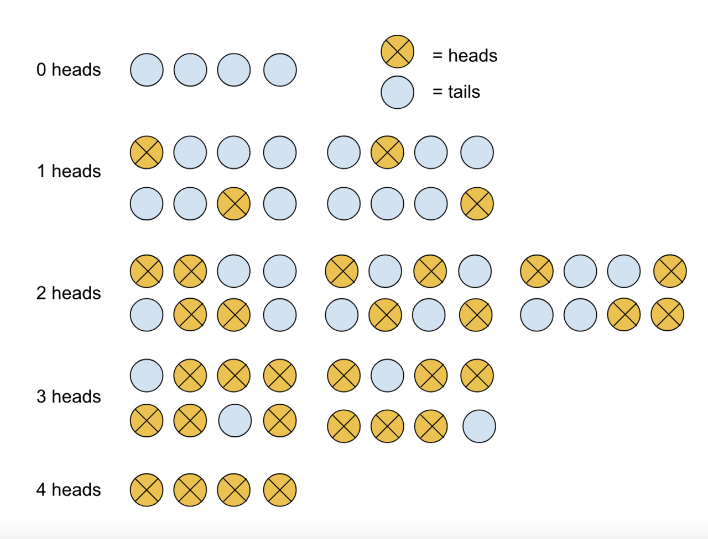
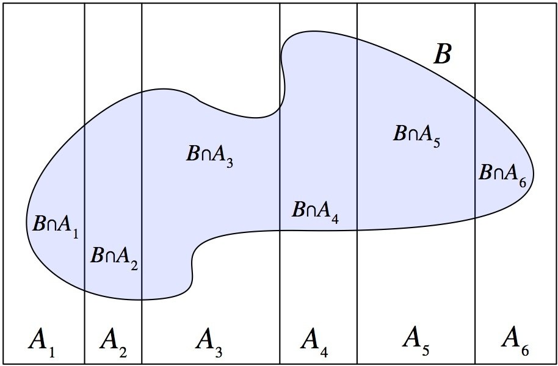
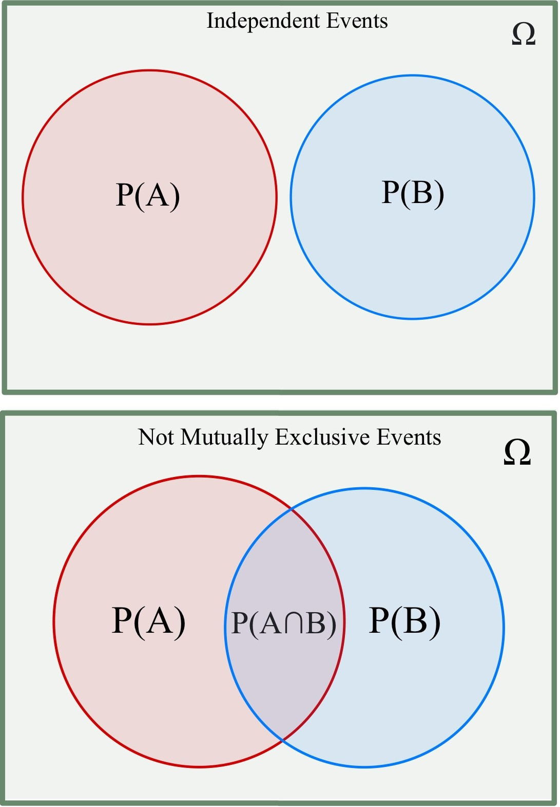
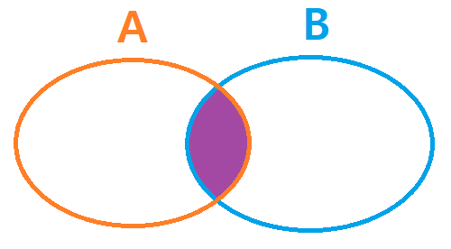
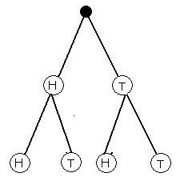

Probability Basics
Everything in the second half of statistics rests on one idea: if you repeated this process forever, how often would that happen? That is all probability is — a bookkeeping system for the long run. It is also the place where a lot of otherwise confident people quietly decide that math is not for them, usually because someone showed them a formula before showing them what it counts. This chapter goes the other way: we will count first, name the rules second, and work every rule out in arithmetic you can check on your fingers. By the end you will be able to read a probability off a table, off a tree, and off a sentence — and, just as importantly, spot the three or four ways people get probability wrong in print every single day.
By the end of this chapter you can
- Define a random process, an outcome, a sample space, and an event, and list a sample space correctly.
- Compute a probability for equally likely outcomes and apply the complement rule.
- State what a probability means — a long-run relative frequency — and explain the law of large numbers.
- Apply the general addition rule and recognize when events are mutually exclusive.
- Apply the general multiplication rule and test whether two events are independent.
- Use the complement of "none" to solve "at least one" problems.
- Compute and correctly interpret a conditional probability, and explain why P(A|B) is not P(B|A).
- Read joint, marginal, and conditional probabilities off a two-way table and build the matching tree diagram.
Section 1What probability is

Random processes, outcomes, and the sample space
A random process is any situation where you know the list of things that could happen but not which one will happen this time: a coin flip, a die roll, a customer either renewing a subscription or not, a machine part either failing this month or not. Each single thing that could happen is an outcome. The complete list of all possible outcomes — every one of them, with no overlap and nothing left out — is the sample space, written S.
Listing the sample space is the most under-rated skill in this chapter, because once you have it, most beginner problems become counting problems. Flip a coin twice and the sample space is S = {HH, HT, TH, TT} — four outcomes, not three. Students frequently write three, reasoning "two heads, two tails, or one of each." That is a mistake worth making once and never again: HT and TH are genuinely different outcomes of the process, and merging them will quietly corrupt every probability you compute afterward.
An event is any collection of outcomes you care to name — a subset of the sample space. "At least one head" is the event {HH, HT, TH}. "Both flips match" is {HH, TT}. An event can hold one outcome, many outcomes, all of them (that is S itself), or none of them (the impossible event). We name events with capital letters: A, B, and so on.
The basic probability formula
When every outcome in the sample space is equally likely — a fair coin, a fair die, a well-shuffled deck, a name drawn blindly from a hat — probability is pure counting:
P(A) = (number of outcomes in A) ÷ (total number of outcomes in S)
That word equally likely is load-bearing. The formula is not a definition of probability; it is a shortcut that works only when the outcomes really are interchangeable. A weighted die, a survey where some people are more likely to respond, a deck someone has stacked — none of these qualify, and for those we get probabilities some other way (from data, from a model, or from a longer-run record).
Three facts follow immediately and are worth memorizing, because they are the sanity checks you will run on every answer for the rest of the book:
- Every probability satisfies 0 ≤ P(A) ≤ 1. A negative probability or a probability of 1.4 is an arithmetic error, full stop.
- P(S) = 1. Something in the sample space has to happen.
- The complement rule: P(Ac) = 1 − P(A), where Ac ("A complement") is the event that A does not happen.
Worked example: rolling two fair dice
Roll a red die and a blue die. Keeping them distinguishable is the trick — each of the 6 red faces can pair with each of the 6 blue faces, so S holds 6 × 6 = 36 equally likely outcomes, written as ordered pairs like (3, 5).
What is P(sum = 7)? Count the pairs that add to 7: (1,6), (2,5), (3,4), (4,3), (5,2), (6,1). That is 6 outcomes.
P(sum = 7) = 6 ÷ 36 = 1/6 ≈ 0.167
What is P(sum ≥ 10)? Sum of 10: (4,6), (5,5), (6,4) — 3 outcomes. Sum of 11: (5,6), (6,5) — 2 outcomes. Sum of 12: (6,6) — 1 outcome. Total 3 + 2 + 1 = 6 outcomes, so P(sum ≥ 10) = 6/36 = 1/6 ≈ 0.167 as well.
What is P(sum is not 7)? Rather than counting 30 pairs, use the complement rule: P(not 7) = 1 − 1/6 = 5/6 ≈ 0.833. Whenever the event you want is messy and its opposite is tidy, flip to the complement.
| Sum | Ways it can happen | Probability | Decimal |
|---|---|---|---|
| 2 | 1 | 1/36 | 0.028 |
| 3 | 2 | 2/36 | 0.056 |
| 4 | 3 | 3/36 | 0.083 |
| 5 | 4 | 4/36 | 0.111 |
| 6 | 5 | 5/36 | 0.139 |
| 7 | 6 | 6/36 | 0.167 |
| 8 | 5 | 5/36 | 0.139 |
| 9 | 4 | 4/36 | 0.111 |
| 10 | 3 | 3/36 | 0.083 |
| 11 | 2 | 2/36 | 0.056 |
| 12 | 1 | 1/36 | 0.028 |
| Total | 36 | 36/36 | 1.000 |
Notice the last row. The probabilities of a complete, non-overlapping list of outcomes always sum to exactly 1 — that is not a coincidence, it is P(S) = 1 showing up in a table. If your column does not add to 1, you have either double-counted an outcome or lost one.
What a probability actually means
Saying P(sum = 7) = 0.167 does not promise you a seven in the next six rolls. It is a statement about the long run: if you rolled these dice ten thousand times, roughly 16.7% of the rolls would total seven, and the more you rolled the closer that percentage would sit to 16.7%. This is the law of large numbers — the observed proportion of an event converges to its true probability as the number of trials grows.
What the law of large numbers explicitly does not say is that the process "corrects" itself. Ten tails in a row does not make heads more likely on the eleventh flip; the coin has no memory, and P(heads) is still 0.5. The long-run proportion drifts back toward 0.5 not because future flips compensate, but because ten flips is a vanishing share of ten thousand — the early surplus gets diluted, not repaid.
- The sample space S is the complete, non-overlapping list of outcomes; an event is any subset of it.
- For equally likely outcomes, P(A) = (outcomes in A) ÷ (outcomes in S).
- Always 0 ≤ P(A) ≤ 1, P(S) = 1, and P(Ac) = 1 − P(A).
- A probability is a long-run relative frequency, not a promise about the next trial — nothing is ever "due."
Section 2The addition rule

"Or" means at least one of them
In everyday speech "or" is often exclusive — "soup or salad" means pick one. In statistics, "or" is always inclusive. The event "A or B" (the union, written A ∪ B) happens if A happens, if B happens, or if both happen. Meanwhile "A and B" (the intersection, A ∩ B) happens only when both occur together. Get these two words nailed down now, because every rule in this chapter is a sentence about one or the other.
The general addition rule is:
P(A or B) = P(A) + P(B) − P(A and B)
Why subtract? Draw two overlapping circles. When you add the area of circle A to the area of circle B, the lens-shaped overlap gets counted twice — once inside each circle. Subtracting P(A and B) removes the duplicate. That is the entire content of the rule: add the pieces, then pay back the double-count.
Mutually exclusive events
Two events are mutually exclusive (also called disjoint) when they cannot both happen on the same trial. In the picture, the circles do not touch. In symbols, P(A and B) = 0 — and the moment that term is zero, the correction term in the addition rule vanishes:
If A and B are mutually exclusive: P(A or B) = P(A) + P(B)
So the "simple" addition rule is not a separate law to memorize — it is the general rule with a zero in it. Learn one formula, not two. Roll a single die: "a 1" and "a 2" are mutually exclusive (a die cannot land on both at once), so P(1 or 2) = 1/6 + 1/6 = 2/6 = 1/3 ≈ 0.333.
The complement rule from Section 1 is the tidiest special case of all. A and Ac are mutually exclusive and together they cover the whole sample space, so P(A) + P(Ac) = P(S) = 1, which rearranges to P(Ac) = 1 − P(A).
Worked example: one card from a standard deck
Draw one card from a well-shuffled 52-card deck. Let H = "the card is a heart" and F = "the card is a face card" (jack, queen, or king).
- Hearts: 13 cards, so P(H) = 13/52 = 0.250.
- Face cards: 3 ranks × 4 suits = 12 cards, so P(F) = 12/52 ≈ 0.231.
- Both at once: the jack, queen, and king of hearts — 3 cards — so P(H and F) = 3/52 ≈ 0.058.
Apply the general addition rule:
P(H or F) = 13/52 + 12/52 − 3/52 = 22/52 = 11/26 ≈ 0.423
Check it by brute force: 13 hearts, plus the 9 face cards that are not hearts, equals 22 cards. It matches. Had you forgotten to subtract, you would have gotten 25/52 ≈ 0.481 — wrong by three cards, exactly the three you counted twice.
| Relationship | P(A and B) | Rule for P(A or B) | Example (one draw or roll) |
|---|---|---|---|
| Mutually exclusive | = 0 | P(A) + P(B) | Die shows "a 1" or "a 2" → 1/6 + 1/6 = 1/3 |
| Overlapping | > 0 | P(A) + P(B) − P(A and B) | Card is "a heart" or "a face card" → 22/52 |
| Complementary | = 0, and union is all of S | P(A) + P(Ac) = 1 | Card "is a heart" or "is not a heart" → 1.000 |
- "A or B" is inclusive — it includes the case where both happen.
- General addition rule: P(A or B) = P(A) + P(B) − P(A and B); the subtraction repairs the double-count.
- Mutually exclusive (disjoint) means P(A and B) = 0, which collapses the rule to P(A) + P(B).
- Mutually exclusive ≠ independent; disjoint events with nonzero probability are strongly dependent.
Section 3The multiplication rule

"And" means both, and both means multiply
Addition answers "or" questions. Multiplication answers "and" questions. The general multiplication rule is:
P(A and B) = P(A) × P(B|A)
Read it as a two-step story: first A happens, and then, in the world where A has already happened, B happens. The symbol P(B|A) is the conditional probability of B given A, which Section 4 unpacks in detail. For now, read the vertical bar as the word "given" or "assuming."
Independent events
Two events are independent when knowing that one occurred does not change the probability of the other — that is, when P(B|A) = P(B). Substitute that into the general rule and the conditioning drops out:
If A and B are independent: P(A and B) = P(A) × P(B)
Again, one rule with a simplification, not two rules. And this equation runs both directions: it is simultaneously the shortcut you use when events are independent and the test you use to decide whether they are. If P(A and B) equals P(A) × P(B), the events are independent; if it does not, they are dependent.
The most reliable everyday source of dependence is sampling without replacement. Draw a card, keep it, draw again: the second draw faces a 51-card deck whose composition depends on the first card. Draw a card, put it back, shuffle, draw again: the second draw faces the same 52-card deck as the first, so the draws are independent. Same deck, same question, different answer — entirely because of whether the card went back.
Worked example: two hearts in a row
Without replacement. P(first card is a heart) = 13/52. Given that it was, only 12 hearts remain among 51 cards, so P(second is a heart | first was a heart) = 12/51.
P(both hearts) = (13/52) × (12/51) = (1/4) × (4/17) = 1/17 ≈ 0.0588
With replacement. The first card goes back and the deck is reshuffled, so the second draw is a fresh 52-card deck:
P(both hearts) = (13/52) × (13/52) = (1/4) × (1/4) = 1/16 = 0.0625
Replacing the card raises the answer from 0.0588 to 0.0625 — a small gap here, but it widens fast as the sample grows relative to the population. As a working rule, when you are sampling less than about 10% of a population, the dependence is small enough that treating draws as independent is a reasonable approximation.
The "at least one" trick
Questions that begin "what is the probability of at least one…" are almost always complement problems in disguise. Counting "at least one" means counting one, two, three, … separately — tedious. Counting the opposite, "none at all," is a single multiplication. So:
P(at least one) = 1 − P(none)
Example. Roll a fair die four times. What is the probability of at least one six? On any single roll, P(not a six) = 5/6. The four rolls are independent, so P(no six in four rolls) = (5/6)4 = 625/1296 ≈ 0.4823. Therefore:
P(at least one six) = 1 − 625/1296 = 671/1296 ≈ 0.518
Just over a coin flip. Note that the naive guess — "1/6 per roll, four rolls, so 4/6 ≈ 0.667" — is wrong, and you can see why instantly: eight rolls by that logic would give 8/6 = 1.33, which is not a probability. Adding probabilities across repeated trials is the classic beginner error; multiplying complements is the fix.
| Setup | Is P(B|A) = P(B)? | Rule to use | P(two hearts) |
|---|---|---|---|
| With replacement | Yes — independent | P(A) × P(B) | (13/52)(13/52) = 0.0625 |
| Without replacement | No — dependent | P(A) × P(B|A) | (13/52)(12/51) = 0.0588 |
| Two fair coin flips | Yes — independent | P(A) × P(B) | (1/2)(1/2) = 0.25 for two heads |
| Card is king / card is heart | Yes — independent | P(A) × P(B) | (4/52)(13/52) = 1/52 = P(king of hearts) |
That last row rewards a second look. On a single draw, "king" and "heart" are independent: P(king) × P(heart) = (1/13)(1/4) = 1/52, and there is in fact exactly 1 king of hearts in 52 cards, so P(king and heart) = 1/52 too. The numbers agree, so the events are independent — even though both describe the very same card. Independence is a statement about probabilities, not about physical separateness.
- General multiplication rule: P(A and B) = P(A) × P(B|A).
- Independent means P(B|A) = P(B), which simplifies the rule to P(A) × P(B).
- P(A and B) = P(A)P(B) is also the test for independence — if the two sides differ, the events are dependent.
- Sampling without replacement creates dependence; "at least one" problems are solved as 1 − P(none).
Section 4Conditional probability

Conditioning shrinks the sample space
A conditional probability answers a narrower question: not "how likely is A in general" but "how likely is A among the cases where B already happened." Rearranging the multiplication rule gives the definition:
P(A|B) = P(A and B) ÷ P(B), provided P(B) > 0
The intuition is worth more than the formula. Conditioning on B throws away every outcome where B did not happen and rebuilds the sample space out of what is left. The denominator is no longer "everything" — it is "everything inside B." The numerator counts the part of that shrunken world where A also holds. Whenever you see a vertical bar, ask yourself one question: what is my denominator now?
Worked example: one roll of a fair die
Roll one fair die. Let A = "the roll is a 6" and B = "the roll is even."
Unconditionally, P(A) = 1/6 ≈ 0.167. Now condition on B. We have P(B) = 3/6 = 1/2 (the faces 2, 4, 6), and P(A and B) = 1/6 (only the face 6 is both a six and even). So:
P(A|B) = (1/6) ÷ (1/2) = (1/6) × (2/1) = 2/6 = 1/3 ≈ 0.333
Sanity-check it by counting instead: told the roll is even, the live possibilities are {2, 4, 6}, and exactly one of those three is a six. One out of three. The formula and the counting agree, as they always will.
Now reverse the bar. P(B|A) = P(A and B) ÷ P(A) = (1/6) ÷ (1/6) = 1.000. If the roll is a 6, it is certainly even. So P(A|B) = 0.333 while P(B|A) = 1.000. These are not the same number, and they are not the same question.
| Question asked | In symbols | Denominator (the "given" world) | Value |
|---|---|---|---|
| Roll is a 6 | P(A) | {1,2,3,4,5,6} — all six faces | 1/6 ≈ 0.167 |
| Roll is a 6, given it is even | P(A|B) | {2,4,6} — three faces | 1/3 ≈ 0.333 |
| Roll is a 6, given it is odd | P(A|Bc) | {1,3,5} — three faces | 0/3 = 0.000 |
| Roll is a 6, given it is > 3 | P(A|C) | {4,5,6} — three faces | 1/3 ≈ 0.333 |
| Roll is even, given it is a 6 | P(B|A) | {6} — one face | 1/1 = 1.000 |
Dependence, independence, and the confusion of the inverse
Conditional probability gives the cleanest definition of independence there is. Events A and B are independent exactly when P(A|B) = P(A) — the condition tells you nothing, so the probability does not budge. They are dependent when P(A|B) ≠ P(A). In the die example, P(A) = 0.167 but P(A|B) = 0.333, so "is a six" and "is even" are dependent — knowing the roll is even doubles your belief that it is a six.
Compare a single card draw: let K = "king" and H = "heart." P(K) = 4/52 = 1/13 ≈ 0.0769, and P(K|H) = 1/13 as well — among the 13 hearts, exactly one is a king. The condition changed nothing, so K and H are independent. Equivalently, P(K and H) = 1/52 = (1/13)(1/4) = P(K)P(H). Both tests always give the same verdict.
The mistake to guard against for the rest of your life is the confusion of the inverse: treating P(A|B) as if it were P(B|A). It shows up everywhere. "Most people who own a private jet are wealthy" is not "most wealthy people own a private jet." "Nearly everyone in the hospital with this condition tested positive" is not "nearly everyone who tests positive has this condition." The two conditional probabilities can differ by orders of magnitude, and which one you need depends entirely on what you already know.
- P(A|B) = P(A and B) ÷ P(B) — conditioning replaces the denominator with the given event.
- Independence means P(A|B) = P(A); dependence means the condition moves the number.
- P(A|B) ≠ P(B|A) in general — reversing the bar reverses the question.
- A p-value is P(data | null true), not P(null true | data); a 95% CI describes the long-run procedure, not this one interval.
Section 5Two-way tables and trees

Reading probabilities off a two-way table
A two-way table (or contingency table) cross-classifies a group of individuals by two categorical variables at once. It is the single most useful object in this chapter, because every probability we have defined can be read straight off it — you never need a formula, only the right denominator.
Suppose 300 job applicants are classified by whether they hold a professional certification and whether they received an offer:
| Received offer | No offer | Row total | |
|---|---|---|---|
| Certified | 90 | 60 | 150 |
| Not certified | 45 | 105 | 150 |
| Column total | 135 | 165 | 300 |
Three kinds of probability live in this table, and they differ only in what you divide by.
Joint probabilities use a single inner cell over the grand total — both things happening together:
- P(certified and offer) = 90/300 = 0.300
- P(not certified and no offer) = 105/300 = 0.350
Marginal probabilities use a row or column total over the grand total — one variable, ignoring the other. They are called marginal because they live in the margins of the table:
- P(certified) = 150/300 = 0.500
- P(offer) = 135/300 = 0.450
Conditional probabilities use a cell over a row or column total — you have restricted the world to one line of the table:
- P(offer | certified) = 90/150 = 0.600 (denominator: the 150 certified applicants)
- P(offer | not certified) = 45/150 = 0.300 (denominator: the 150 uncertified applicants)
- P(certified | offer) = 90/135 ≈ 0.667 (denominator: the 135 applicants with offers)
Look hard at the last two bullets. P(offer | certified) = 0.600 and P(certified | offer) ≈ 0.667 come from the same cell, 90 — but from different denominators, so they are different numbers answering different questions. That is the confusion of the inverse, made visible.
The table also answers the other rules. The addition rule: P(certified or offer) = 0.500 + 0.450 − 0.300 = 0.650; verify by counting cells, 90 + 60 + 45 = 195, and 195/300 = 0.650. The independence test: P(certified)P(offer) = 0.500 × 0.450 = 0.225, but the actual joint probability is 0.300. Since 0.225 ≠ 0.300, certification and receiving an offer are dependent in this group. The conditional probabilities say the same thing more vividly: 0.600 versus 0.300 — certified applicants got offers at twice the rate.
The same data as a tree
A tree diagram takes the same information and stages it in time. The first set of branches splits on the first variable; each second-stage branch is conditional on the branch above it. Two rules govern trees, and they are just the multiplication and addition rules wearing different clothes:
- Multiply along a path to get the probability of that complete path (this is P(A) × P(B|A)).
- Add across paths that produce the outcome you want (this works because different paths are mutually exclusive).
Here is our applicant data as a tree. Stage 1 branches are the marginal probabilities of certification; stage 2 branches are the conditional probabilities of an offer given that certification status.
| Path | Stage 1: certification | Stage 2: offer, given stage 1 | Path probability | Check against counts |
|---|---|---|---|---|
| Certified → Offer | 0.500 | 0.600 | 0.500 × 0.600 = 0.300 | 90/300 = 0.300 |
| Certified → No offer | 0.500 | 0.400 | 0.500 × 0.400 = 0.200 | 60/300 = 0.200 |
| Not certified → Offer | 0.500 | 0.300 | 0.500 × 0.300 = 0.150 | 45/300 = 0.150 |
| Not certified → No offer | 0.500 | 0.700 | 0.500 × 0.700 = 0.350 | 105/300 = 0.350 |
| Total | 1.000 | 300/300 |
The path probabilities sum to 1.000, which is your arithmetic check — a tree whose ends do not total 1 has an error in it.
Working the tree backwards
Adding across paths gives the law of total probability. To find the overall chance of an offer, collect every path that ends in an offer:
P(offer) = 0.300 + 0.150 = 0.450
which is exactly the marginal 135/300 we read off the table. Written out in full, this is P(offer) = P(cert)P(offer|cert) + P(no cert)P(offer|no cert) = (0.500)(0.600) + (0.500)(0.300) = 0.300 + 0.150 = 0.450.
Now the genuinely useful move: trees let you reverse the conditioning. Suppose you meet an applicant who received an offer and want the probability that they are certified — that is P(certified | offer), which is the opposite direction from the branches you were given. Use the definition of conditional probability, taking the numerator from the one path with both features and the denominator from the total you just computed:
P(certified | offer) = 0.300 ÷ 0.450 = 2/3 ≈ 0.667
which matches 90/135 from the table. This reversal is the whole engine behind Bayes' rule, and you have just done it with nothing but division. The pattern is always the same: the path you care about, divided by all the paths that end the same way.
- Joint = cell ÷ grand total; marginal = row or column total ÷ grand total; conditional = cell ÷ row or column total.
- Test independence from a table by comparing P(A and B) with P(A)P(B), or P(A|B) with P(A).
- In a tree, multiply along a path and add across paths; all path probabilities must sum to 1.
- Reverse the conditioning by dividing the path you want by the sum of all paths with that ending — the law of total probability supplies the denominator.
The chapter in one breath
- The sample space is every possible outcome; an event is a subset of it; for equally likely outcomes, probability is just counting: outcomes in A over outcomes in S.
- Probabilities live between 0 and 1, sum to 1 over a complete list, and mean a long-run relative frequency — nothing is ever "due."
- The complement rule, P(Ac) = 1 − P(A), turns hard events into easy ones — especially "at least one."
- Addition rule: P(A or B) = P(A) + P(B) − P(A and B); the subtraction disappears only when the events are mutually exclusive.
- Multiplication rule: P(A and B) = P(A) × P(B|A); the conditioning disappears only when the events are independent.
- Mutually exclusive ≠ independent — disjoint events with nonzero probability are in fact strongly dependent.
- Conditional probability shrinks the denominator to the given event, and P(A|B) is not P(B|A) — the error behind misread p-values and misread test results alike.
- Two-way tables and trees hold every one of these rules at once: joint, marginal, and conditional probabilities differ only in what you divide by.
ReferenceWords worth knowing
These are the terms that will keep appearing for the rest of the book — skim them now, and come back whenever a symbol stops making sense.
- Addition rule
- P(A or B) = P(A) + P(B) − P(A and B). The subtraction removes outcomes counted twice; it drops out when the events are mutually exclusive.
- Complement
- The event that A does not occur, written Ac. P(Ac) = 1 − P(A).
- Conditional probability
- The probability of A given that B has occurred: P(A|B) = P(A and B) ÷ P(B). Conditioning replaces the denominator with the given event.
- Contingency table (two-way table)
- A table cross-classifying individuals by two categorical variables, with row, column, and grand totals. Joint, marginal, and conditional probabilities can all be read from it.
- Dependent events
- Events for which P(A|B) ≠ P(A) — knowing one occurred changes the probability of the other.
- Disjoint events
- Another name for mutually exclusive events: they cannot both happen on the same trial, so P(A and B) = 0.
- Event
- Any collection of outcomes from the sample space, usually named with a capital letter.
- Independent events
- Events for which P(A|B) = P(A), equivalently P(A and B) = P(A)P(B). Knowing one tells you nothing about the other.
- Intersection
- The event that both A and B occur, written A ∩ B or "A and B."
- Joint probability
- The probability that two events occur together, P(A and B). On a two-way table it is a single inner cell divided by the grand total.
- Law of large numbers
- As the number of independent trials grows, the observed proportion of an event converges to its true probability. It does not imply that a process corrects past imbalances.
- Law of total probability
- Breaking an event into mutually exclusive cases and adding: P(B) = P(A)P(B|A) + P(Ac)P(B|Ac). On a tree, it is adding across all paths that end the same way.
- Marginal probability
- The probability of one event ignoring the other, P(A). On a two-way table it is a row or column total divided by the grand total.
- Multiplication rule
- P(A and B) = P(A) × P(B|A); it simplifies to P(A) × P(B) when the events are independent.
- Mutually exclusive
- Events that cannot occur on the same trial, so P(A and B) = 0. Not the same as independent — in fact the opposite in spirit.
- Outcome
- A single possible result of one run of a random process.
- Probability
- A number between 0 and 1 giving the long-run relative frequency with which an event occurs.
- Random process
- A situation whose set of possible outcomes is known but whose particular result is not determined in advance.
- Replacement (with and without)
- Whether a selected item is returned before the next selection. With replacement the draws are independent; without replacement they are dependent.
- Sample space
- The complete, non-overlapping list of all possible outcomes of a random process, written S. All its probabilities sum to 1.
- Tree diagram
- A staged picture of a random process where you multiply probabilities along a path and add across paths; second-stage branches are conditional on the first.
- Union
- The event that A occurs, B occurs, or both, written A ∪ B or "A or B." In statistics "or" is always inclusive.